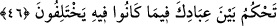

sen benimle birlikte benim evimde nasıl ikamet edebilirsin ki?” dedi. Cenab-ı Hak:
“Sen benim beni zikredenle hem-meclis olduğumu bilmiyor musun? Kulum ne zaman
ve nerede ararsa beni bulur!” Nitekim el-Makâsıdü’l-hasene’de böyle geçmektedir.
Bu hadisten Allah’ı zikredenin Allah ile, Allah’tan başkasını ananın ise şeytan ile
beraber olduğu anlaşılmaktadır.
Şeyh Sa’dî (Bostân’da) der ki:
Eğer zavallı ölünün dili olsaydı,
Yana yakıla inleyecekti.
“Ey diri insan, diyecekti, şimdi söylemek imkânı varken
Dudağını ölüler gibi yumarak zikirden geri kalma.
Bizim zamanımız gafletle geçtiyse
Sen bari şu birkaç nefesi fırsat bil.
Bir hadîste şöyle buyrulmuştur: “Sıcak bir gün olduğunda bir kimse “Lâ ilâhe
illâllah, bugün ne kadar sıcak! Allâhım, beni cehennem ateşinin harâretinden koru.”
diye duâ edince Allah Teâlâ cehenneme: “Kullarımdan biri senin harâretinden bana
sığındı. Ben seni şâhid tutuyorum ki onu senin harâretinden âzat ettim!” buyurur.
Soğuk bir gün olunca da kul, “Lâ ilâhe illâllah, bugün ne kadar soğuk! Allah’ım, beni
cehennemin soğuğundan koru.” diye duâ edince Allah Teâlâ cehenneme:
“Kullarımdan biri benden kendisini senin soğuğundan korumamı istedi. Ben seni
şâhid tutuyorum ki onu senin soğuğundan âzad ettim!” buyurur.” Orada bulunanlar:
“Cehennemin soğuğu/zemherîri nedir?” diye sorduklarında Hz. Peygamber (s.a.):
“Orası öyle bir evdir ki kâfir oraya atılır da soğuğunun şiddetinden vücudunun bir
kısmı başka bir kısmından ayrılır.” buyurdu.[126]
Mesnevî’de der ki:
Hadiste vârid oldu ki: Duâ edip de mümin
Cehennemden âzâdlık isteyince ilahdan,
Can havliyle şöyle der Cehennem:
Allahım! Uzak tut beni şu kuldan!
Şu halde akıllı kimseye düşen, zikirden kopmamak ve onunla sevinmektir. Allah
onunla beraberdir ve onun yardımcısıdır.
46. De ki: Ey gökleri ve yeri yaratan, gizliyi de âşikârı da bilen Allah’ım!